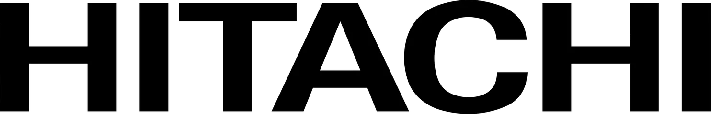

غسالتك تسوي مشاكل، غسالة الصحون ما تصرف الماء، أو النشافة تطلع الملابس باردة؟ إحنا فريق صيانة مقرنا في الرياض، نوصل لك، نشخص المشكلة الحقيقية، ونصلحها — بدون تخمين وبدون بيع خدمات زايدة.

فنيونا قضوا سنين وايدهم وسط الغسالات وغسالات الصحون والنشافات — غالبًا يعرفون العطل قبل لا يفكوا الغطاء حتى.
اتصل الصبح، وفي الغالب نوصلك قبل وقت الغدا.
ما نصلح الجهاز بشكل مؤقت يخرب بعد شهر — نلقى السبب الحقيقي أول شي.
من حي القدس إلى حي الياسمين، نجيك أنت — ما تحتاج تنقل الغسالة لأي مكان.
إصلاح واضح واحترافي للأجهزة التي يعتمد عليها منزلك كل يوم.

إصلاح احترافي للغسالات الأوتوماتيك ومعالجة الأعطال الشائعة فيها.

إصلاح موثوق لغسالات الصحون يشمل مشاكل التنظيف والصرف والمياه والكهرباء.

إصلاح احترافي للنشافات يشمل مشاكل التسخين والدوران والتجفيف والتشغيل.
أسلوب عمل واضح واحترافي يركز على إعادة تشغيل جهازك بشكل صحيح.
كل فني عندنا عنده خبرة عملية مع ال جي وسامسونج وأكثر من ماركة تلقاها في بيوت الرياض.
نعرف إن الغسالة المتعطلة ما تنتظر، فإحنا كذلك ما ننتظر.
بتعرف وش المشكلة وكم التكلفة قبل لا حد يلمس أي شيء.
نفضل ناخذ وقت زيادة عشان نصلحها صح، بدل ما نستعجل ونرجع نزورك بعد أسبوع.
قول لنا وش صايرة — الصوت، التسريب، كود الخطأ — ونقول لك بصراحة وش يحتاج إصلاح.
مقرنا في حي القدس، ونشتغل في أحياء الرياض الشمالية والوسطى.
يعمل فنيونا على مجموعة واسعة من ماركات الغسالات الأوتوماتيك وغسالات الصحون والنشافات.

Hitachiتصليح جهازك أصبح سريعًا وسهلاً.
اتصل، راسلنا، أو عبّئ نموذج التواصل.
صف الجهاز ونوع العطل.
يصل فنينا لفحص الجهاز.
نكمل الإصلاح في موقعك مباشرة.
نظرة على الأجهزة التي قام فنيونا بصيانتها في جميع أنحاء الرياض.
صيانة الغسالات
الفني أثناء العمل
تصليح النشافات
نقدم خدمة إصلاح ميدانية للغسالات الأوتوماتيك وغسالات الصحون والنشافات لعملائنا في الرياض والأحياء المجاورة لها. تواصل معنا للتأكد من تغطية منطقتك.
نخدم مدينة الرياض، المملكة العربية السعودية
إصلاح ميداني للأجهزة في هذه الأحياء وما حولها في الرياض.
غسالتك، غسالة الصحون، أو النشافة تحتاج فحص؟ فنيونا يتكفلون بالثلاثة، وغسالات ال جي وسامسونج، وحدات دايو، غسالات صحون بوش ونشافات توشيبا نشوفها في بيوت الرياض بنفس القدر تقريبًا، فإحنا متعودين عليها. غسالة ما تصرف الماء، نشافة طلعت باردة، غسالة صحون تطلع الصحون نص نظيفة — كل مكالمة تاخذ نفس المعاملة: نشخص المشكلة صح أولاً، وبعدين نقول لك بصراحة وش تحتاج. اتصل أو راسلنا على واتساب في أي وقت، حتى خارج أوقات الدوام إذا كانت الحالة مستعجلة.
أحمد لإصلاح الغسالات الأوتوماتيك خدمة صيانة منزلية في الرياض للغسالات الأوتوماتيك وغسالات الصحون والنشافات. يزور فنيونا منزلك ويحددون العطل الفعلي ويصلحون الجهاز في الموقع متى أمكن. ولا نصلح الثلاجات ولا المكيفات ولا الأفران ولا التلفزيونات.
| البند | التفاصيل |
|---|---|
| النشاط | أحمد لإصلاح الغسالات الأوتوماتيك |
| الخدمات | صيانة الغسالات الأوتوماتيك وغسالات الصحون والنشافات |
| منطقة الخدمة | الرياض: شمالها وشرقها وغربها وجنوبها |
| نوع الزيارة | زيارات منزلية مع الإصلاح في الموقع متى أمكن |
| اللغات | العربية والإنجليزية |
| الهاتف / واتساب | +966 55 939 1603 |
| العنوان | حي القدس، شارع محمد بن فيصل بن تركي، الرياض، المملكة العربية السعودية |
| ساعات العمل | متاحون 24 ساعة، 7 أيام في الأسبوع |
| الماركات | ال جي وسامسونج ودايو وبوش وتوشيبا وهيتاشي وميديا وهاير وويرلبول وميتاج وباناسونيك وويستنجهاوس واريستون وغيرها |
آخر تحديث: أكتوبر 2026
نعم — مشاكل التصريف، الدوران، التسريب، أعطال الباب، ورموز الأخطاء، وكل ما يخطر على بالك.
نعم، حتى المشاكل المزعجة منها — الصحون تطلع غير نظيفة، أو يتجمع الماء في القاع.
نعم — لا تسخن، الدرم لا يدور، الملابس تطلع رطبة بعد دورة كاملة، كل هذا نتعامل معه.
نعم، يقوم فنيونا بزيارة موقعك في أي مكان داخل الرياض.
اتصل، راسلنا على واتساب، أو عبّئ النموذج — أي طريقة تناسبك. عادة نرد خلال ساعة.
المكالمات الصباحية غالبًا تعني زيارة في نفس اليوم. مكالمات بعد الظهر أحيانًا تتأجل لصباح اليوم التالي — نوضح لك مباشرة أي حالة تنطبق عليك.
نعم، نصلح أجهزة ال جي وسامسونج ودايو وبوش وتوشيبا وهيتاشي وميديا وهاير وويرلبول وميتاج واريستون وغيرها. أخبرنا بموديل جهازك عند الاتصال أو المراسلة على واتساب ونؤكد لك.
تعتمد التكلفة على نوع العطل وأي قطع غيار مطلوبة. تواصل معنا مع تفاصيل جهازك للحصول على تقدير مجاني.
نحاول ترتيب زيارة في نفس اليوم قدر الإمكان، حسب موقعك والجدول المتاح لدينا.
نعم، تأتي الإصلاحات المكتملة مع ضمان على جودة العمل. اسأل الفني عن التفاصيل الخاصة بإصلاحك.
نصلح الغسالات الأوتوماتيك وغسالات الصحون والنشافات في منازل العملاء في الرياض.
نخدم الرياض، ومنها شمالها وشرقها وغربها وجنوبها. تواصل معنا للتأكد من تغطية حيّك.
لا. نركز على الغسالات وغسالات الصحون والنشافات.
تبدأ أغلب المكالمات بعَرَض واضح: باب لا ينفتح، أو ماء يتسرب من الأسفل، أو طبلة توقفت عن الدوران، أو صوت مزعج واهتزاز أثناء العصر، أو غسالة لا تبدأ العمل. نصلح الغسالات الأمامية والعلوية، الأوتوماتيك بالكامل ونصف الأوتوماتيك، فأيًّا كان الموديل لديك فغالبًا أصلحنا مثله من قبل.
لغسالات الصحون أعطالها المعتادة: مرشات توقفت عن الدوران، أو مضخة معطلة، أو حساس تالف، أو جلدة باب تسرب الماء. أما النشافات فغالبًا يرجع العطل إلى عنصر التسخين أو الثرموستات أو فتحة تهوية مسدودة أو محرك متآكل.
ظهر رمز مثل OE أو UE في غسالة إل جي، أو 4E أو 5E في سامسونج، أو E17 أو E18 في بوش؟ أخبرنا به عند الاتصال وغالبًا نوضح لك ما يشير إليه قبل الزيارة. جرّب أداة معرفة رموز الأخطاء أو اقرأ دليل رموز أخطاء بوش. كما نساعدك في توفير قطع الغيار، ونقدم تشخيصًا مجانيًا، ونوضح ما يغطيه ضمان الصيانة.
تبحث عن فني غسالات قريب منك في الرياض؟ نزور المنازل في شمال وشرق وغرب وجنوب الرياض، ومنها حي النرجس وحي الملقا وحي الياسمين وحي العارض. نصلح الغسالات وغسالات الصحون والنشافات فقط، ولا نصلح الثلاجات أو المكيفات أو الأفران أو التلفزيونات. اتصل أو راسلنا على واتساب +966 55 939 1603.
تصفح صيانة الغسالات في الرياض حسب الماركة والنوع والعطل.
تواصل مع فريقنا اليوم لترتيب زيارة إصلاح احترافية.